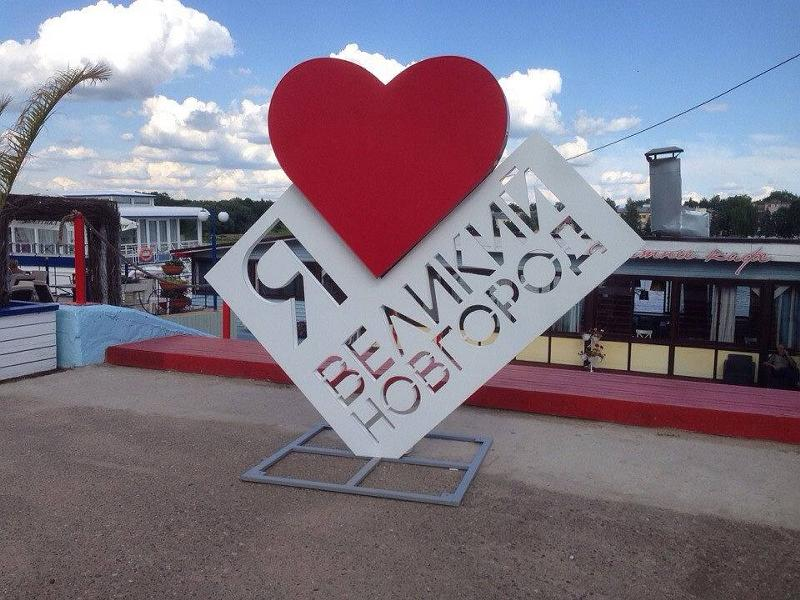

Москва — столица и самый большой город страны. Здесь расположены: Московский Кремль и Красная площадь (внесены в список Объектов Всемирного Наследия ЮНЕСКО), Третьяковская Галерея, Музей имени Пушкина, Храм Христа-Спасителя, Богоявленский Собор, Свято-Данилов монастырь, многочисленные церкви и монастыри, мемориальный комплекс на Поклонной горе, Триумфальная арка на Кутузовском проспекте, Новый и Старый Арбат, Бульварное кольцо, Коломенское, Гостиный Двор и Манежная площадь, знаменитые «высотки» сталинской эпохи, ВВЦ с «Рабочим и колхозницей», зоопарк, «Японский сад» в Ботаническом саду, цирки и известные во всем мире многочисленные театры. В пригородах: усадьбы Кусково, Архангельское, Царицыно, Абрамцево, город Сергиев Посад, знаменитый расположенным в нем величайшим в России монастырем — Троице-Сергиевой Лаврой.
Помимо Сергиева Посада, в Золотое кольцо России входят города Александров, Владимир, Гороховец, Иваново, Кострома, Муром, Переславль-Залесский, Плес, Ростов, Рыбинск, Суздаль, Углич, Юрьев-Польской, Ярославль. Маршрут по ним не оставит равнодушными ценителей древнерусской архитектуры. Северо-восток древнего Московского государства сказочно богат памятниками истории и культуры, целыми городами-музеями. Эти «каменные летописи» — создания человеческих рук, свидетели исторических событий, трагедий, народного героизма. Полвека назад многие из прекрасных архитектурных сооружений были близки к полному разрушению. Огромной заслугой реставраторов является спасение памятников и восстановление их былой стройности и красоты. В числе многочисленных памятников Золотого кольца: средневековые Успенский и Дмитриевский соборы, Боголюбово, храм Покрова-на-Нерли во Владимире, сохранившем фрески Андрея Рублева и Даниила Черного; Владимиро-Суздальский историко-художественный и архитектурный музей-заповедник, впервые упомянутый в 1024 г. в Лаврентьевской летописи; Ростовский кремль; Ярославские храмы и монастыри, в одном из которых была найдена рукопись «Слова о полку Игореве»; Ипатьевский монастырь Костромы и многое другое.
Владимир — это уникальный старинный русский город, где можно познакомиться с настоящей Россией, увидеть очарование древней архитектуры, бережно сохраненной природы. Во Владимире Вы осмотрите памятники архитектуры ХII века: Успенский собор, построенный князем Андреем Боголюбским. Дмитровский собор, сооруженный Всеволодом III как дворцовый храм. В его скульптурном убранстве около полутора тысяч рельефов, знаменитые на весь мир Золотые ворота 1164 года, имевшие оборонное и триумфальное значение при князе Андрее Боголюбском.
Суздаль — один из древнейших русских городов, святое место, откуда в 990 году началось распространение христианства на северо-востоке Руси. Сейчас этот уникальный город-музей (32 церкви, 5 монастырских ансамблей, 14 колоколен, 280 памятников архитектуры) включен ЮНЕСКО в список памятников ахритектуры всемирного наследия. Богатейшими собраниями отличаются суздальские музеи: коллекции древнерусских икон, уникальное собрание предметов деревянного зодчества, крестьянского быта, народной деревянной резьбы, белошвейного производства, золотой кладовой. Густые звуки колоколов СпасоЕвфимиевского монастыря не оставят никого равнодушными.
Кострома, один из древнейших городов «Золотого Кольца», ведет свое летоисчисление с ХII-го века. Обзорная экскурсия по городу познакомит Вас с историей и архитектурой Костромы. Архитектурный ансамбль центра города — один из лучших образцов русского классицизма ХVIII века. Вы посетите церковь Воскресения на Дебре ХVII века, в которой сохранился уникальный золоченый резной иконостас ХVII века и знаменитая икона Федоровской Богоматери ХIII век. Познакомитесь с архитектурным убранством Ипатиевского монастыря и его историей, связанной с династией Романовых.
Санкт-Петербург получил за свой историко-архитектурный ансамбль звание «Северной Венеции». Музеи: Эрмитаж, Петропавловская крепость, Русский, Кунсткамера, им. Пушкина и другие, 16 профессиональных театров (в том числе знаменитый Мариинский). Соборы — Казанский, Никольский, Исакиевский, Спаса-на-Крови, Александро-Невская Лавра. Здесь похоронен великий русский полководец А. В. Суворов. Около Троицкого собора Лавры — два некрополя XVIII и XIX веков, где покоятся великие русские ученые, мастера искусств и государственные деятели. Другие достопримечательности: Адмиралтейство, стрелка Васильевского острова со зданием Биржи, Дворцовая площадь с Зимним Дворцом, Александровской колонной и аркой Главного штаба, площадь Декабристов (бывшая Сенатская) с памятником Петру I («Медный всадник», открыт в 1782 г.), Смольный. Уникален ансамбль Невского проспекта — Казанский собор, улица зодчего Росси и площадь Островского, Марсово поле, Летний сад и Инженерный замок. В пригородах Санкт-Петербурга — Петродворце (Петергофе), Пушкине (Царском Селе), Павловске, Гатчине расположены уникальные дворцово-парковые ансамбли XVIII-XIX веков. Исторический центр города внесен в список ЮНЕСКО.
В северной части Ладожского озера, в древности называемого Нево, лежат многочисленные острова. Самый крупный из них - Валаам: уникальный природный заповедник и одна из крупнейших русских православных святынь.
Список городов тура

Программа тура:
- Прибытие в Суздаль. Хлебом, солью и ароматным чаем встретит Вас фольклорный ансамбль. Вы почувствуете себя желанным гостем в главном туристическом комплексе Суздаля, расположенного в излучине реки Каменки. К Вашим услугам 1-2-х местные номера, 2-х комнатные люксы и 3-х комнатные апартаменты, ресторан на 400 мест с европейской и русской кухней. Ужин в ресторане.
- Завтрак в ресторане. Экскурсия по городу с посещением музеев. Обед в ресторане. Катание на лошадях, фольклорные игры. Ужин в охотничьем домике.
- Завтрак в ресторане. Посещение церквей и монастырей Суздаля. Обед в ресторане. Сеансы сауны с бассейном (за дополнительную плату). Свободное время. Ужин в ресторане. Дискотека. Завтрак в ресторане. Отъезд.